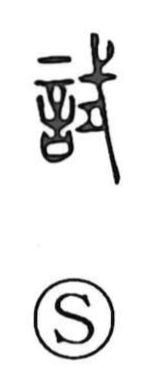

試

Kun: kokoromiru, tamesu | On: shi
to try ・ to test ・ trial ・ to attempt ・ to use
Explanation
試 is a picto-phonetic character formed from 言, the words or prayers uttered in ritual, and 式 (shiki), which supplies the sound and evokes a ritual implement used to expel impurity through incantation. Because the efficacy of such rites was confirmed by actually performing them, the character came to mean to try, to test, and by extension to use. It likely belonged to rites connected with punishment or military affairs. In 試験 (shiken, examination), 験 recalls the practice of discerning the gods’ will by observing a horse’s movements and stillness—an animal thought especially quick to catch inspiration—hence the sense of putting something to the test.